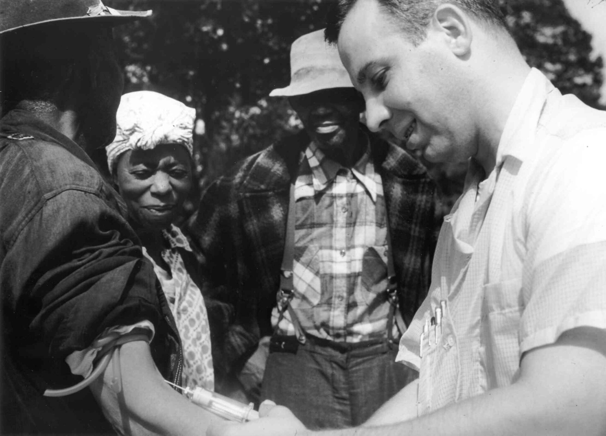

You've studied words all term. Now you're studying people, which asks more of you.
Debate this
"If people volunteer to answer your survey, their answers are yours to use however you want. They said yes, ethics handled."
Start here
What gives you the right to study another human being?
Not legally. Not which form you file. Ethically. When am I entitled to ask you something, observe you, record you, quote you, put your words in a dataset, publish what I learn? And the one underneath it: does the fact that knowledge would be useful give me the right to go get it?
Here's the idea
No. Usefulness is not permission.Much of the history of this field is researchers reaching that answer after somebody else had already paid for it.
And ethical failure almost never begins with "I intend to hurt people." It begins with something far more ordinary: but I need the data.
Notice this while it happens to you
The moment I call you a participant, I've changed what you are to me.
Five minutes ago you were Sarah, or Malik, or José. Now there's a research question in the room, so you're also:
Participant 14. Female, age 22. Respondent. Interview subject. Data point.
That abstraction is useful. Research could barely function without it. It's also where the trouble starts, because Participant 14 is easier to push around than Sarah is. All of this exists to make researchers keep remembering there's still a person inside the data point.
Nuremberg Trials, 1945–1946 (U.S. National Archives, public domain).
Where the first rule came from.The Doctors' Trial, December 1946 to August 1947.
An American military tribunal tried twenty-three defendants, twenty of them physicians. Sixteen were convicted. Seven were executed. Out of that judgment came the Nuremberg Code, and its first line is consent.
This next part is difficult material, and it is the reason the rest of the hour exists.
What the tribunal documented
Human beings, in camps, who could not refuse.
Freezing. Prisoners at Dachau held in tanks of ice water while researchers recorded core temperature, to learn how long a downed pilot might survive the North Sea, and which rewarming method worked. Many died in the water.
Decompression. Prisoners sealed in low-pressure chambers simulating altitudes no one could survive without oxygen, to study what happens to a pilot at height.
Seawater. Prisoners given nothing but seawater to drink, for days, to test whether it could be made drinkable.
Infection. Prisoners deliberately infected with malaria, typhus, and other diseases so vaccines and treatments could be tried on them.
Wounds. At Ravensbrück, wounds cut into the legs of Polish women and packed with bacteria, glass, and wood, to test whether a sulfa drug would control the infection. The survivors were left permanently disabled.
Mustard gas, bone and nerve transplantation, sterilization. Burns inflicted to test treatments. Bone, muscle, and nerve cut out and moved between bodies. Women sterilized without their knowledge.
The people used were Jewish prisoners, Roma, Poles, Soviet prisoners of war, disabled people, and political prisoners. The common feature is not what was done to them. It is that none of them could say no.
Here's why this belongs in a research methods class
These were not back-alley operators. They were credentialed physicians and researchers at major institutions.
They used the whole apparatus of science. Control groups. Standardized procedures. Instruments. Recorded measurements. Written results, circulated to colleagues and presented at conferences. Several of them framed the work as urgent and patriotic: pilots were dying in cold water, and somebody had to find out what would save them.
Every one of those is a thing you are being trained to do. Not one of them is ethics.
Method is not a conscience. A study can be well designed, carefully measured, accurately reported, useful to somebody, and still be an atrocity. That is what "in the name of science" means, and it is why consent had to be written down as a rule rather than left to the judgment of experts.

U.S. Public Health Service syphilis study at Tuskegee (public domain).
1932 to 1972
The Public Health Service, with the Tuskegee Institute, set out to watch untreated syphilis progress. Six hundred Black men took part: 399 who had it, 201 who did not. They were told they were being treated for "bad blood." They did not consent to what was actually happening. By the 1940s penicillin was the standard cure. They were not offered it. The study ran forty years.
What exactly went wrong?
Here's the idea
Why these men? Why poor Black men in Alabama?One population carried every risk. Physicians, institutions, and the rest of the country collected the knowledge.
That becomes one of the permanent questions of the field: who bears the burden of producing knowledge, and who receives its benefits?
1974 National Research Act · 1979 report
The Belmont Report is short, and it rests on three words.
Respect for persons
People decide what happens to them, informed and unpressured. People whose capacity to decide is reduced are owed more protection, not less.
Beneficence
Don't harm people unnecessarily. Hold the possible harms down and the possible benefits up.
Justice
Who carries the risk, and who collects the benefit? Belmont ties this directly to how you choose participants.
Understand those three and you understand the logic under all of CITI and all of IRB review.
Respect for persons
Consent is not a piece of paper. Consent is a condition.
It depends on three things at once:
Information. Comprehension. Voluntariness.
Enough to decide on, in a form they can follow, with a decision that is actually free. So you don't trick anyone into participating, don't hide a risk that matters, don't make participation effectively mandatory, and don't penalize a refusal.
Same request, two senders
From a classmate
"Hey everyone, I need 25 people to finish this survey for my Research Methods grade. I'd really appreciate it if everybody helped me out."
From your professor
"I'm running a study and would like students in this class to participate."
Neither one threatens anybody. So what changed between them?
Here's the idea
Coercion
A threat, which almost never sounds like one. Your shift supervisor forwards the survey to the team and mentions she'll be checking the completion list. Nobody said what happens to whoever isn't on it, and nobody needs to.
Undue influence
No threat at all. The reward or the circumstances get strong enough that the choice stops being as free as it looks. Money can do it. Course credit can do it. A professor's approval can do it. So can access to something scarce.
Willowbrook State School, 1950s onward. Researchers studied hepatitis at an institution for children with intellectual disabilities. Some children were deliberately infected. The argument was that hepatitis was already everywhere inside the institution anyway. The children were institutionalized and cognitively disabled, and during some periods admission to a better part of Willowbrook was tied to taking part.
How voluntary is a parent's permission when the thing their child needs may depend on saying yes?
It isn't, and no signature fixes it. The consent was formally present and substantively hollow, and nothing in the paperwork would have shown you that.
Beneficence
Harm does not have to be physical, and in your work it usually will not be.
Four cases where nobody is physically injured and somebody is still hurt.
You interview workers about harassment. The recordings leak. Somebody loses a job.
You survey students about immigration status. A breach exposes someone legally and socially.
You interview an assault survivor and ask for detail. You cause lasting distress.
You interview three openly LGBTQ people in a small town and describe them as "a 53-year-old minister, a 29-year-old teacher, and the owner of a local coffee shop." You used pseudonyms and identified all three anyway.
That last one is deductive disclosure: a dataset doesn't need anybody's name to give them away.
What could happen to this person if the wrong person learned what they told me?
Run that question before you collect anything.
Justice
Your question is "how do Appalachian residents experience access to health information." Your recruitment plan is "I'll email everyone in my Honors seminar."
You just created two problems at once. What are they?
Here's the idea
You created a methodological problem and an ethical one at the same time.
The sample does not just lean toward convenience. It favors whoever is easiest for you to reach, and it answers a question about Appalachian residents using data about honors students.
This happens at full scale, and it has names.
The Havasupai Tribe and Arizona State University. From 1990 to 1994, researchers collected blood from Havasupai members for a study on diabetes, which the tribe wanted. The samples were then used without consent for research on schizophrenia, inbreeding, and migration, and the migration findings contradicted the tribe's own account of where they came from. A tribe member discovered this in 2003. The 2010 settlement paid $700,000 to 41 people, funded a clinic and a school, and returned the samples. The diabetes was never addressed.
Parachute research. Global health has a term for researchers who fly in from wealthy institutions, gather data, and publish without local colleagues. During the pandemic, one in five papers about COVID-19 in Africa came out with no African author on it.
So ethics is not only whether this individual consented. It is also this: why are these the people I keep asking to carry the cost of answering my questions?
Deception
Stanley Milgram wanted to know how ordinary people respond to authority. Participants believed they were delivering increasingly powerful electric shocks to another person for every wrong answer. There were no shocks and the other person was in on it. Milgram reported participants sweating, trembling, stuttering, laughing nervously. Many continued when told to.
Could he have told them in advance what he was studying? And if not, what follows?
Here's the idea
Of course not, which is what makes this difficult instead of easy.
The answer to "can deception be justified" is not automatically no. Some social and behavioral research legitimately uses incomplete disclosure. What changes is the weight the researcher now carries: is it necessary, could the question be answered another way, what's the risk, how and when are people debriefed, and could learning the truth itself cause harm?
And this: researchers don't get to decide on their own that deception is fine because their study matters to them.
That is what independent review is for.
2014 · none of this is history
Researchers published a study involving 689,003 Facebook users. Facebook adjusted how much positive or negative emotional content appeared in people's feeds, then measured changes in what those people posted. The users did not know. The argument offered was that Facebook's Data Use Policy constituted consent.
If you click "I agree" on nine thousand words of Terms of Service, have you consented to being an experimental subject?
Here's the idea
Carry it into your own work. Someone's TikTok is public: can you study their posts? Someone writes in a public Reddit forum: can you quote them? Now make the forum about addiction, infertility, sexual identity, immigration status, or suicide.
Does publicly accessible mean ethically consequence-free?No. Legal access, technical access, and ethical permission are three separate questions.
For contemporary digital research, telling those three apart is most of the job.
Three things, not one
CITI
You finished the training. It does not pre-approve anything you invent afterward.
IRB
One particular protocol got reviewed by people who don't want your study to happen as much as you do.
Your conduct
What you actually do during the research. You can hold an approved protocol and still behave badly inside it.
What this means for you here. A class project that exists only to satisfy a course requirement doesn't meet the federal definition of research and doesn't need IRB approval. That is not a release from ethics: you and I stay responsible for running it ethically and getting permission from participants.
If a project is meant to contribute to generalizable knowledge, it may become human-subjects research, and then nothing starts until you have approval or an official exemption. And exempt does not mean exempt from ethics.
Your study · Research Notebook, Entry 9a
Plan the ethics before you collect a single response.
Open your Research Notebook. Four answers, then I'll come around.
Who will you recruit, and where? Is anybody in that group easy to harm, or in a position where saying no is expensive?
How will you get consent? Draft the sentences you'll put in front of them before they answer anything.
Anonymous or confidential? Say which, and how you'll keep it that way.
Finish this: I do not need to know ______ about them because ______. Every identifier you collect is something you've taken on the duty to protect.
Where we end up
The participant lends you something.
Their time, their words, sometimes very private parts of their life. Respect: this is a person capable of choosing. Beneficence: their welfare outranks my convenience. Justice: whose life pays for what I learn? The forms come later. The obligation starts now.